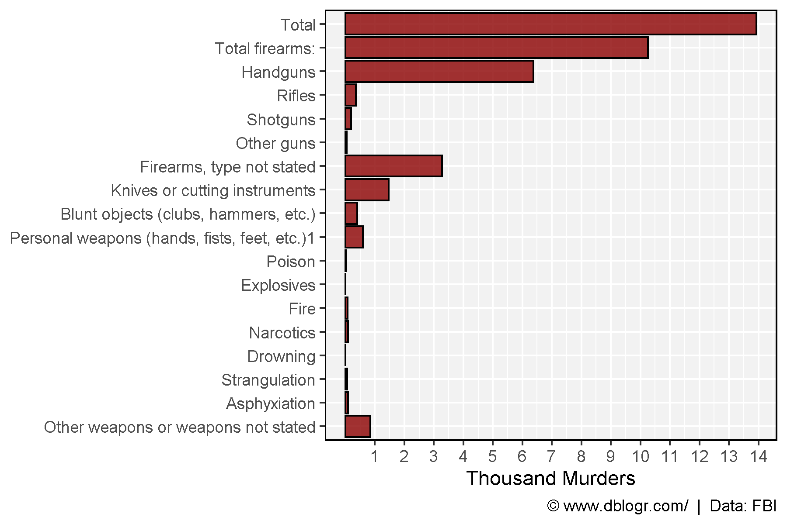
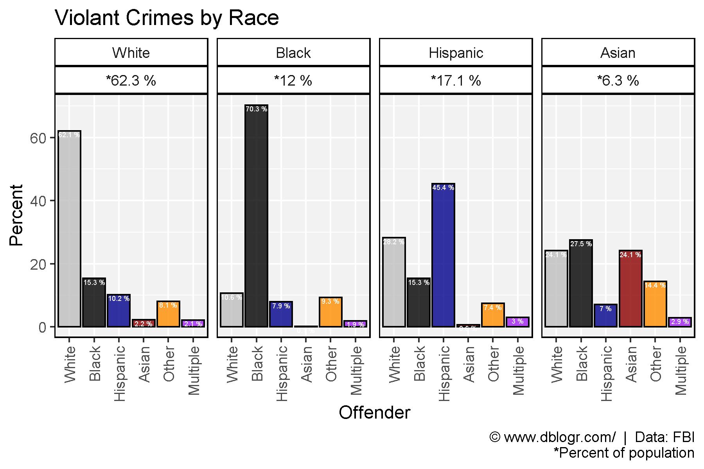
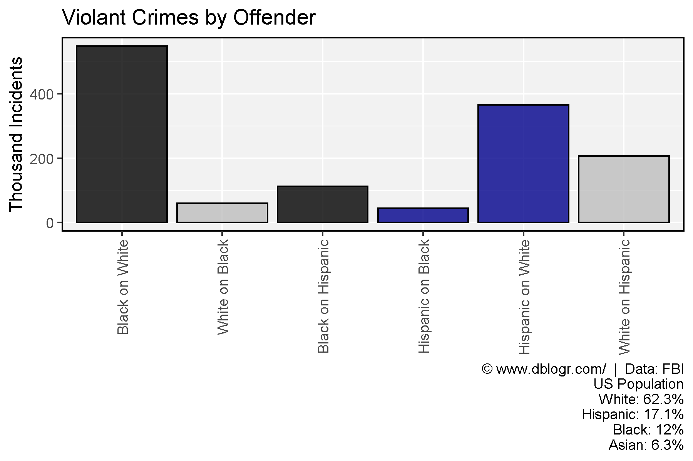
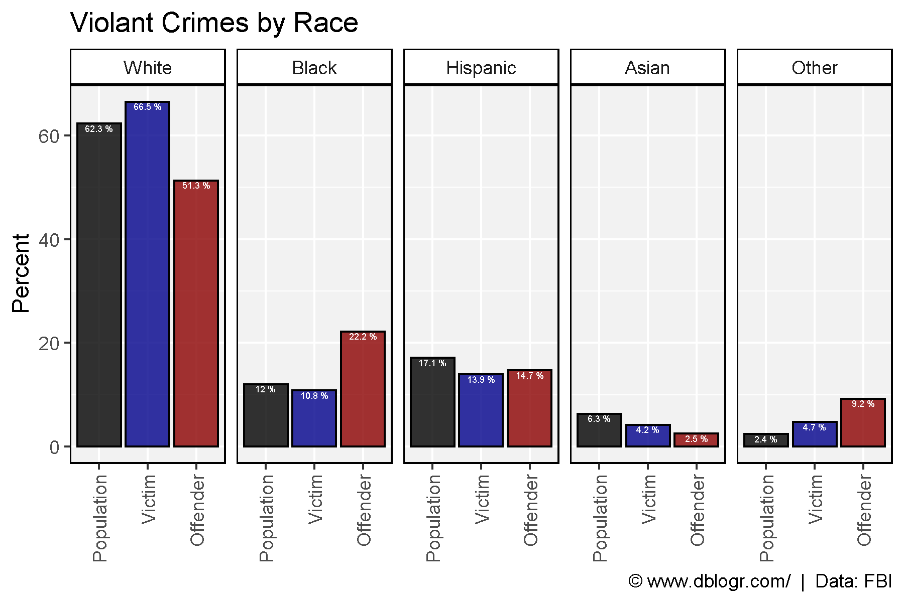
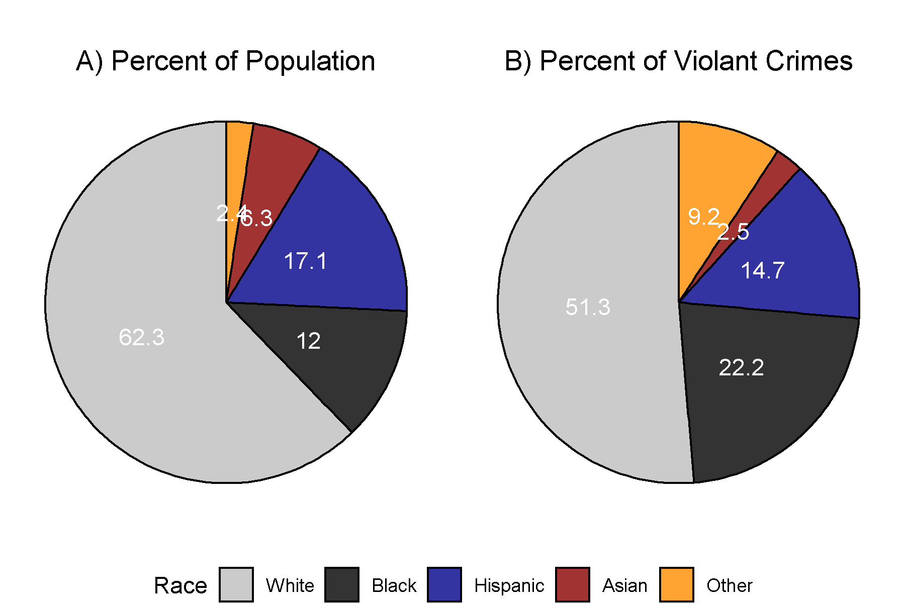

Prepare data
# devtools::install_github("derekmichaelwright/agData")
library(agData) # Loads: tidyverse, ggpubr, ggbeeswarm, ggrepel
library(readxl)# Prep data
xx <- read_xlsx("usa_crime_data.xlsx", "Murders") %>%
gather(Year, Value, 2:ncol(.)) %>%
mutate(Weapons = factor(Weapons, levels = rev(unique(Weapons))),
#Year = as.numeric(substr(Year, 2, 5)),
Value = as.numeric(gsub(",", "", Value))) %>%
filter(Year == 2019)
# Plot
mp <- ggplot(xx, aes(x = Weapons, y = Value / 1000)) +
geom_bar(stat = "identity", color = "black", fill = "darkred", alpha = 0.8) +
scale_y_continuous(breaks = 1:14) +
coord_flip() +
theme_agData() +
labs(x = NULL, y = "Thousand Murders",
caption = "\xa9 www.dblogr.com/ | Data: FBI")
ggsave("usa_crime_01.png", width = 6, height = 4)
# Prep data
colors <- c("grey", "Black", "darkblue", "darkred", "darkorange", "purple" )
races <- c("White", "Black", "Hispanic", "Asian", "Other", "Multiple")
y1 <- read_xlsx("usa_crime_data.xlsx", "Race2") %>%
select(Victim=Race, PopulationPercent)
y2 <- read_xlsx("usa_crime_data.xlsx", "Race0")
xx <- read_xlsx("usa_crime_data.xlsx", "Race1") %>%
left_join(y1, by = "Victim") %>%
left_join(y2, by = "Victim") %>%
mutate(Offender = factor(Offender, levels = races),
Victim = factor(Victim, levels = races),
Incidents = Percent * ViolentIncidents / 100)
# Plot
mp <- ggplot(xx, aes(x = Offender, y = Percent, fill = Offender)) +
geom_bar(stat = "identity", color = "black", alpha = 0.8) +
geom_text(aes(label = paste(Percent, "%")), vjust = 1.1, size = 1.5, color = "white") +
facet_grid(. ~ Victim + paste0("*", PopulationPercent, " %")) +
scale_fill_manual(values = colors) +
theme_agData(legend.position = "none", rotx = T) +
labs(title = "Violant Crimes by Victim",
caption = "\xa9 www.dblogr.com/ | Data: FBI\n*Percent of population")
ggsave("usa_crime_02.png", mp, width = 6, height = 4)
# Prep data
y1 <- y1 %>% rename(Offender=Victim)
x1 <- xx %>% filter(Offender %in% races[1:4]) %>%
select(-PopulationPercent) %>%
left_join(y1, by = "Offender") %>%
mutate(Offender = factor(Offender, levels = races))
# Plot
mp <- ggplot(x1, aes(x = Victim, y = Incidents / 1000, fill = Victim)) +
geom_bar(stat = "identity", color = "black", alpha = 0.8) +
facet_grid(. ~ Offender + paste0("*", PopulationPercent, " %")) +
scale_fill_manual(values = colors) +
theme_agData(legend.position = "none", rotx = T) +
labs(title = "Violant Crimes by Offender", y = "Thousand Incidents",
caption = "\xa9 www.dblogr.com/ | Data: FBI\n*Percent of population")
ggsave("usa_crime_03.png", mp, width = 6, height = 4)
# Prep data
crimes <- c("Black on White", "White on Black",
"Black on Hispanic", "Hispanic on Black",
"Hispanic on White", "White on Hispanic" )
x2 <- x1 %>%
mutate(Crime = paste(Offender,"on", Victim)) %>%
filter(Crime %in% crimes) %>%
mutate(Crime = factor(Crime, levels = crimes))
# Plot
mp <- ggplot(x2, aes(x = Crime, y = Incidents / 1000, fill = Offender)) +
geom_bar(stat = "identity", color = "black", alpha = 0.8) +
scale_fill_manual(values = colors) +
theme_agData(legend.position = "none", rotx = T) +
labs(title = "Violant Crimes by Offender", y = "Thousand Incidents", x = NULL,
caption = "\xa9 www.dblogr.com/ | Data: FBI\nUS Population\nWhite: 62.3%\nHispanic: 17.1%\nBlack: 12%\nAsian: 6.3%")
ggsave("usa_crime_04.png", mp, width = 6, height = 4)
# Prep data
crimes <- c("White on Asian", "Asian on White",
"Black on Asian", "Asian on Black",
"Hispanic on Asian", "Asian on Hispanic" )
x2 <- x1 %>%
mutate(Crime = paste(Offender,"on", Victim)) %>%
filter(Crime %in% crimes) %>%
mutate(Crime = factor(Crime, levels = crimes))
# Plot
mp <- ggplot(x2, aes(x = Crime, y = Incidents / 1000, fill = Offender)) +
geom_bar(stat = "identity", color = "black", alpha = 0.8) +
scale_fill_manual(values = colors) +
theme_agData(legend.position = "none", rotx = T) +
labs(title = "Violant Crimes by Offender", y = "Thousand Incidents", x = NULL,
caption = "\xa9 www.dblogr.com/ | Data: FBI\nUS Population\nWhite: 62.3%\nHispanic: 17.1%\nBlack: 12%\nAsian: 6.3%")
ggsave("usa_crime_05.png", mp, width = 6, height = 4)
# Prep data
colors <- c("Black", "darkblue", "darkred")
races <- c("White", "Black", "Hispanic", "Asian", "Other")
xx <- read_xlsx("usa_crime_data.xlsx", "Race2") %>%
select(Race, Offender=OffenderPercent,
Victim=VictimPercent, Population=PopulationPercent) %>%
gather(Trait, Value, 2:ncol(.)) %>%
mutate(Trait = factor(Trait, levels = c("Population", "Victim", "Offender")),
Race = factor(Race, levels = races),
Value = round(Value, 1))
# Plot
mp <- ggplot(xx, aes(x = Trait, y = Value, fill = Trait)) +
geom_bar(stat = "identity", color = "black", alpha = 0.8) +
geom_text(aes(label = paste(Value, "%")), vjust = 1.1, size = 1.5, color = "white") +
facet_grid(. ~ Race) +
scale_fill_manual(values = colors) +
theme_agData(legend.position = "none", rotx = T) +
labs(title = "Violant Crimes by Race", y = "Percent", x = NULL,
caption = "\xa9 www.dblogr.com/ | Data: FBI")
ggsave("usa_crime_06.png", mp, width = 6, height = 4)
# Prep data
colors <- c("grey", "Black", "darkblue", "darkred", "darkorange", "purple" )
races <- c("White", "Black", "Hispanic", "Asian", "Other", "Multiple")
xx <- read_xlsx("usa_crime_data.xlsx", "Race2") %>%
mutate(Race = factor(Race, levels = races),
OffenderPercent = round(OffenderPercent, 1))
# Plot
mp1 <- ggplot(xx, aes(x = "", y = PopulationPercent, fill = Race)) +
geom_bar(stat = "identity", position = "stack", color = "black", alpha = 0.8) +
geom_text(aes(label = PopulationPercent), color = "white",
position = position_stack(vjust = 0.5)) +
scale_fill_manual(values = colors) +
theme_void() +
theme(plot.title = element_text(hjust = 0.5)) +
coord_polar("y") +
labs(title = "A) Percent of Population", y = NULL, x = NULL)
mp2 <- ggplot(xx, aes(x = "", y = OffenderPercent, fill = Race)) +
geom_bar(stat = "identity", position = "stack", color = "black", alpha = 0.8) +
geom_text(aes(label = OffenderPercent), color = "white",
position = position_stack(vjust = 0.5)) +
scale_fill_manual(values = colors) +
theme_void() +
theme(plot.title = element_text(hjust = 0.5)) +
coord_polar("y") +
labs(title = "B) Percent of Violant Crimes", y = NULL, x = NULL#,
#caption = "\xa9 www.dblogr.com/ | Data: FBI"
)
mp <- ggarrange(mp1, mp2, common.legend = T, legend = "bottom")
ggsave("usa_crime_07.png", mp, width = 6, height = 4)
© Derek Michael Wright www.dblogr.com/